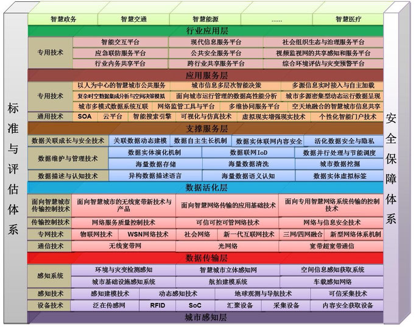
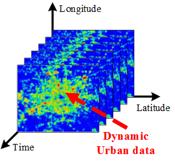

Current Visitors:
智慧城市技术体系研究作为对整个智慧城市技术研究工作的顶层设计，对于指导领域技术的发展方向，明确研究工作的内涵与外延，优化现有研究资源的配置与分布等均具有非常重要的意义。
早期的智慧城市技术体系研究由IBM的研究人员发起，文献[3]对IBM的Smarter Cities™技术功能进行了详细的介绍，其提出的智慧城市功能范围更多的是以服务和基础设施为中心，对于数据的重要性没有做过多的强调。研究工作[4]从整合的角度对智慧城市框架系统的框架进行了理解，提出了一种智慧城市的初步框架。该框架认为智慧城市要从政策、组织和技术三个角度将政府、居民社区、经济、基础设施、自然环境相整合，对于技术细节没有做过多的讨论。文献[5]对一些早期的智慧城市技术框架进行了总结，认为智慧城市的根本要素包括人、机构和技术三个方面，在技术方面又可以细分为数字城市、智能城市、无线城市、信息城市等。这些智慧城市技术体系的研究工作，更多是围绕城市建设的基本要素展开，对于一些数据科学与技术在城市中扮演的角色，没有做过多讨论。

近些年，学术界开始逐步关注到数据科学对于智慧城市技术的重要性，并提出了一些相应的技术体系。如图1所示，浙江大学的潘纲教授在2013 IEEE Communication Magazine, Smart Cities专题中阐述了基于轨迹数据分析与挖掘的智慧城市技术体系框架[6]。该框架将基于轨迹数据的智慧城市技术体系分为了轨迹感知(trace)、知识发现(knowledge)和具体应用(applications)三个层次。该框架从概略的层面上系统描述了以数据为中心的智慧城市技术的整体技术路线。微软亚洲研究院的郑宇团队在2013《CCF通讯》城市计算专题当中提出了一种“四层反馈”结构的城市计算技术体系框架[7,8]。如图2所示，该技术体系将城市计算的技术框架细分为了“城市感知与数据捕获”、“城市数据管理”、“城市数据分析”、“服务提供”等四个层次。该框架的一个特色在于其引入了“服务提供”层对于真实物理世界的反馈回路，更加完善的考虑了智慧城市技术对于城市生活的影响。在科技部863“智慧城市（一期）”项目的支持下，863智慧城市项目（一期）总体组提出了“六横两纵”的智慧城市技术框架[9]。如图3所示，该框架将智慧城市技术体系按照依赖关系划分为了“城市感知层”、“数据传输层”、“数据活化层”、“支撑服务层”、“应用服务层”以及“行业应用层”等六个横向的层次，即“六横”；同时还引入了贯穿六个层次的两大保障体系：“标准与评估体系”以及“安全保障体系”，即“两纵”。该技术框架的一大特色在于其十分具体的细化了各个层次所应包含的技术集合以及其之间的相互依赖关系，为智慧城市技术的整体发展提供了详细的布局性指导。我国未来智慧城市的技术体系建设很有可能将会参照该体系进行丰富和完善。

Fig 3. The general Smart City technical framework of the China "863" project. [9]
图3. 中国863智慧城市项目总体技术体系架构[9]
综合看来，上述几种智慧城市的技术体系框架均有一个共同的特性，即以数据的获取与管理技术作为底层的支撑，以数据挖掘、处理和分析技术作为整个框架的核心构成，在此基础之上对城市用户提供多样化的服务应用。换言之，未来智慧城市的技术的发展方必将是以数据为中心，在这一点上学术界已经从顶层设计的角度达成了基本共识。
- 城市动态特征分析
城市动态特性的分析工作更加侧重于对城市中时间和空间模式的成因及内在联系进行分析和理解。例如，研究工作[60]提供了对于道路交通中异常事件根本成因的分析挖掘的方法。文献[61]将研究重点放在了城市空间动态特性的分析之上，其利用浮动车的GPS的轨迹数据建立了城市不同空间特征之间的交互作用模型。文献[62]进一步分析了城市空间特征与时间特征背后的成因联系，将城市动态特性分解为一些基本模式，并将复杂的城市空间与时间特征用这些基本模式的线性组合表示，研究的实验结果具有很好的可解释性。研究工作[63]则使用可视化的方式，对于北京市城市交通拥堵事件的关联关系进行了分析。
比起面向具体城市应用的研究工作，城市动态特性的检测与分析的内涵和外延都更加抽象，研究工作范围边界很难明确界定，很多研究都作为具体应用的支撑技术在相关文献的某一章节中进行介绍，系统性不强。但是作为应用研究的支撑基础，该类研究工作的价值不容忽视，构建和梳理系统的城市动态特性检测分析技术与理论体系是深入开展该项研究工作的当务之急。

Fig 4. Data sensing of urban dynamic
图4. 城市动态特性的数据感知
在使用城市感知数据对城市动态特性进行研究的现有工作可以分为城市动态检测和城市动态分析两个大类。接下来，我们对这两个大类的代表性工作进行简要介绍。
- 城市动态特征检测
城市动态检测研究的目标是指对城市感知数据中包含的城市空间特征和时间特征进行检测发现。如图5所示，空间特征是指在时间上频繁或规律出现而在地理上具有独特分布的城市数据特征。城市的空间信号特征往往对应于城市中具有特殊功能的热点地区，例如商业区、交通枢纽站、事故多发点等[49,50]。早期的热点检测方法以城市数据信号的强度和密度特性作为衡量指标，不同的强度和密度对应不同的空间特征。香港科大的Lionel M. Ni教授团队最早提出了一种基于移动特性而非密度特性的热点检测方法[50]。微软亚洲研究院的Y. Zheng团队通过将GPS数据同POI数据相结合的方式，计算了北京各个城市区域中属于某一个功能区划的概率，并以此为依据实现城市功能区的划分[51]，该工作的底层支撑技术就是城市空间信号的特征检测[52,53]。类似的工作还有使用推特文本数据流的时空动态检测[54]，根据大规模出租车的运动行为对城市的社交功能分布进行检测[55]，以及对城市人口的移动特性检测[56]等。
如图6所示，城市时间特征是指在时间上随机出现的异常于该地理区域通常时间分布的异常信号特征，该类特征往往对应于城市中一些特殊事件的发生，例如演出、大型活动、交通管制等。文献[57]使用出租车浮动车的GPS数据设计了分析城市交通流量异常的检测算法，文献[58]在前述算法的基础上进一步实现了对于交通异常模式的早期检测，利用该算法提供的服务，可以更早的对道路交通中的一些拥堵事件进行具有前摄性的预防处置。文献[59]则使用群体感知的方式收集了城市中市民的活动数据和社交网络的媒体数据，并利用这些数据进行城市交通事件的异常检测。由于社交网络中的媒体数据具有更加丰富语义特性，因此可以获得更加准确检测效果。
-
2.3.2 城区功能识别与规划
识别城市不同区域的主要功能作用是理解城市特点的首要任务之一，开展城市规划工作是指导城市建设发展的主要手段，以数据为中心的智慧城市技术在上述领域同样发挥了非常重要的作用。
城区的功能识别是指利用城市运行数据和动态特征对于城市的各个不同区域按照其在整个城市中所承担的功能进行识别和标注。例如划分出商业区、住宅区、工业区、行政区等。该类研究的难点一方面在于城市的功能区划往往具有非常大的重叠性和混合性，即便是采用人工标注的方法也很难准确定义某一个城区的所承担的具体功能；另一方面，由于城市的功能区划属于城市动态特性的深层次语义，并没有非常适当的城市监控指标可以直接反映城市区域的功能，科研人员需要从不同城市数据空间中将城市功能区划的投影从众多深层次特性的投影当中提取出来，这具有非常大的难度；此外，由于城区功能是城市的深层次特性不能直接观测，因此很难对检测算法的检测正确性进行直接验证，这也造成了对于研究工作评价的困难。尽管具有诸多挑战，但是该类研究的价值依然是显而易见的，对于城市的设计者来说，城市的功能结构对应了城市的内在发展规律，通过了解城市的内在的发展规律，可以指导未来城市的建设方向，纠正已有不合理的城市规划方案等。
早期的城市功能区域识别工作只能对城区进行粗粒度的功能区分，例如研究工作[64, 65, 66, 67,68]仅能区分住宅区、非住宅区两种类型的城市功能区划，研究工作[69]将分区的精度提到为了三种，即住宅区、工商业区、公共机构区。研究工作[70]则将城市的功能区进一步细化为了四种，即商业区、工业区、服务区、住宅区。这些粗粒度的城市功能区域划分在一些结构单一、形成时间短、规划效果好的城市当中能够表现出较好的性能。但对于我国城市普遍存在的一些问题，例如城区功能复杂、混合程度高、先建设后规划等问题，上述算法很难满足实际的应用需求，还需要有更加细粒度的城区识别技术。针对上述需求，研究工作[62]将城市的日常通勤模式划分成了住宅区模式、工作区模式和其它模式，每一个城区的功能可以被建模为三种不同模式根据自身功能需求而形成的线性组合，线性组合的系数可以被用来当做该城区功能成分的度量。例如，如果某一城区在住宅区通勤模式上的系数比较大并有中等的工作区通勤模式系数，那么该区域就可以被认为包含有较多的住宅，同时还兼有一部分工作区的功能。研究工作[52]对于一个城市商业区的密度水平进行了评估，每一个城区都可以使用该文献提出的算法来估算商业功能在该个城区中的概率。文献[53]提出了对于城市的住宅区密度分布进行测算的方法，这些方法可以用来度量某个城区属于住宅区的概率。文献[71]使用OD语义流来探究不同出发-到达城区之间的相互关系。浙江大学的G. Pang团队使用出租车的GPS数据对于杭州市不同城区的功能进行了细粒度的划分[72]，该研究通过细致的城市区域功能特征设计，使用基本的SVM算法获得了高达95%的城区功能识别率。微软亚洲研究院的Y. Zheng团队借鉴了自然语言处理领域中文章主题分类的方法对北京市的城区域功能进行了识别和分类[51]。该研究的核心思想是将不同的城市区域建模为文章主题分类模型中的文章，城市的区域功能类型建模为文章的主题，将城区的通勤模式分布建模为文章的词频分布，并配合POI数据使用改进的LDA对城市区域进行分类，取得了非常好的分类效果。
除了使用交通通勤数据外，文献[73]使用手机数据对城市的区域功能进行了识别和划分。类似的技术还可以应用到对于道路和特殊兴趣点的类型划分，例如，研究工作[74,75]对于城市的街道类型进行了识别和划分。研究工作[76]发现城市轨道交通的客流数据在反映乘客出行情况的同时，也揭示了城市区域间的功能联系和演进规律，因此使用北京市的地铁客流进出站数据对北京地铁站周边的城市区域进行了功能识别与划分，为北京城市地铁站周边区域的规划与设计提供了指导信息。研究工作[77]则使用纽约地铁的客流数据对纽约地铁站的功能类型进行了划分，为纽约地铁的建设规划提供了指导帮助。
使用城市数据对于建设规划的合理性进行评估也是近两年新兴的一个研究方向。研究工作[49]使用城市出租车GPS轨迹数据测算了北京市不同城区之间的连通性，并设计了三种指标对于城区之间的交通性能进行评估。该研究所取得的成果可以用来检测城市的设计失误和评价城市的设计优劣。
上述研究工作可以看做是对城市动态特征检测技术的一种应用，他们的一个共同特点是其并不关心城市数据与某一具体城市动态特性之间的相关关系，而是使用城市数据所包含的整体信息来对城市的结构特性进行理解。研究方法则是直接对采集到的城市数据进行模式提取与分类，并用分类后的结果近似城市的功能区划。这些研究之所以能够这样做是因为城市的功能与规划本身就是多种城市动态特性的综合体现，我们可以不用具体理解某一特定的城市动态特征对城区功能的直接作用方式，而只需要比较其之间的差异性即可。在该类研究中，所采用城市数据的种类越丰富、数据包含的城市动态信息越多，越有利于问题的求解。
-
2.3.3 附加行业应用
以数据为中心的智慧城市技术也能够为不同的城市行业应用提供巨大的帮助。我们知道海量的城市数据的收集过程本身就是为了支持与之相对应的行业应用。例如，GPS浮动车数据是为了监测道路的拥堵状况、手机数据是为了提供手机通讯服务、一卡通客流数据是为了提供方便的公共交通服务等。除了这些数据本身所对应的专门应用之外，城市数据还可以用于提供与最初数据收集过程无关的行业应用，我们称之为附加行业应用。附加行业应用的一个重要特点是，人们无法获得充分的目标行业数据，而只能采用相关的外围城市数据，建立行业信息同外围数据之间的关联模型，再利用模型和综合数据反推行业应用所需的信息。如何从包含了城市综合特性的外围城市数据当中提取某一特定附加行业应用所需要的信息，是附加行业应用研究所面临的主要挑战。一些具有代表性的研究工作包括能源消耗、空气质量、住房价格和地图测绘等。接下来我们对这些工作进行简要介绍。
- 能源消耗
能源是维系城市运转的动力所在，随着全球能源的日益枯竭，降低城市能源消耗、构建绿色城市成为了智慧城市建设的核心目标之一。然而，城市作为一个复杂的能量代谢系统，即便是弄清楚城市对某一种特定形式能源的消耗量也是非常困难的。为解决这一问题，微软亚洲研究院的Y. Zheng团队利用出租车GPS数据和城市加油站的POI数据对北京市机动车辆的每日汽油消耗量进行了估算[78]。该研究所要解决的挑战一方面在于出租车并不能完全代表城市中全部车辆的行为，每一个加油站中正在加油的车辆中只有一小部分是出租车，也并非每个加油站每时每刻都有出租车辆在进行加油；另一方面GPS数据只包含出租车的行驶轨迹与运营状态信息，没有明确的车辆行驶意图信息，一辆出租车在加油站附近出现并不能说明其正在加油，需要有专门的算法对出租车的加油行为进行检测和判断。针对上述两个方面的问题，Y. Zheng团队设计实现了从GPS轨迹数据中发现加油事件的检测方法，提出了一种能够在稀疏张量当中分析汽车在加油站中加油所消耗时间的评估算法，并实现了能够通过加油时间推断加油站车辆到达频率的排队计算方法。该研究可以为普通用户提供加油站的推荐服务，也可以为石油公司的加油站建设规划提供意见，同时还可以让政府了解和掌握整个城市的能源消耗情况，从而制定更为合理的能源管理政策。
除了Y. Zheng团队的研究工作之外，研究工作[79]还通过分析城市人口、车辆GPS数据以及POI等数据来规划电动汽车充电站的建设。文献[80]则通过分析车内总线传感器的数据来设计更加节能环保的汽车驾驶方式。
- 空气质量
大气污染问题是我国北方主要大型城市所面临的一个巨大的环境问题。尤其是近几年，北京的空气质量问题受到了从政府到公众的一致关注，PM2.5、雾霾、空气指数等不断成为新闻媒体所热议的关键词。为解决我国城市近两年持续出现的空气污染问题，国务院于2013年9月10日印发了《大气污染防治行动计划》[81]，提出要从十个方面采用综合手段防治大气污染。然而，空气污染也具有非常复杂的成因，人们在对于大气污染的认识依然存在着许多空白。比如大气中的首要污染物就是竟是由什么原因造成的，交通、工厂、气候、天气、人口、植被，究竟哪一个才是对空气质量影响最大的因素，现有的空气监控系统能否满足大气污染治理的实际需要等。只有回答了这些问题，才能够真正实现对于大气污染的有效防治。
基于城市计算技术的U-Air系统在该领域取得了初步的研究进展[82]。U-Air系统对北京市22个空气监测站的PM2.5数据读数进行了分析研究，发现即便是在相同的天气条件下，距离非常接近的两个空气监测站的PM2.5数据读数依然会有数倍的差距。这意味着如果采用线性差值的方法，目前较为稀疏的监测站分布并不能完全反映整个北京市的空气质量情况。市民在得知空气质量较好的情况下，很可能会外出进入一个空气质量非常差的市区，从而引发健康问题。为了解决这一问题，U-Air系统利用机器学习技术，使用城市的气象数据、交通数据、城市结构数据、POI数据等训练获得了城市空气质量的时空模型，并使用该模型实现了以一平方公里为单位的细粒度城市空气质量报告。此外，该模型还能够很好的度量不同城市动态因素对空气质量的影响情况。该研究成果为进一步的空气质量预报和空气污染治理等大气污染防治工作奠定了初步的基础。
- 城市经济
城市经济学是经济学的一个重要分支[83]，其研究对象是城市中各要素在社会经济系统中的相互作用关系和运行方式。以数据为中心的智慧城市技术采用全新的视角来分析城市经济学问题，与传统的经济学分析模型不同，数据挖掘、机器学习等人工智能技术在这里扮演了核心角色。
英国科研人员设计开发的Geo-Spotting系统使用机器学习的方法，利用Foursquare应用提供的LBS数据，对纽约城区的店铺地理位置与营业收益的关系进行了分析，并以此为依据帮助商户进行店铺选址[84]。研究工作[85,86]使用POI数据对城市的经济活动分布进行研究。此外，一些关于城市商业区分布的城市功能区域识别工作也可以列入城市经济学的范畴当中[51]。
- 地图测绘
城市交通数据在地图的测绘方面也能够发挥非常大的作用，对于城市当中一些新修建但并未进行地图测绘的街道，可以使用车辆行的驶轨迹数据进行测量，这样的测绘方式可以极大地提升城市地图的测绘效率并有效的降低测绘成本。文献[87]率先研究了使用城市交通的GPS数据进行地图绘制的方法，研究工作[88]提出了一种能够检测双向道路路链的地图生成算法，文献[89]则进一步设计了能够对城市中立交桥交叉点进行检测地图绘制方法。
综上所述，附加行业应用的相关研究专注于智慧城市建设某一领域的特殊需求，核心任务是建立已知城市数据同城市未知特性之间的关系模型。该类研究所面临的关键挑战在于如何降低现有数据同无关特性之间的耦合程度，挖掘数据同目标应用之间的相关联系。在该类应用当中，数据所包含的城市动态信息越单一越有助于问题的求解。
-
2.4 城市人类活动统计力学
人类行为统计力学是统计物理学的一个重要分支，主要研究内容是使用统计的手段揭示人类行为的内在规律，采用的研究手段以复杂网络、复杂系统等物理学工具为主，并综合融入了信息科学、社会学等多学科研究工具。该领域的研究早期由物理学家发起，近几年越来越多的受到信息科学等其他领域科研人员的关注。城市环境下的人类行为统计力学研究我们称之为城市人类活动统计力学。该类研究与智能交通、城市计算等信息学科研究的不同之处在于其更加关注揭示数据背后所蕴含的自然规律，应用色彩并不浓重。接下来，本文从城市交通网络分析和市民行为建模两个方面简要介绍相关的研究工作。
-
2.4.1 城市交通网络分析
与城市交通网络分析相关的统计力学研究来源于复杂网络的相关研究。1998年Watts和Strogatz在Nature杂志上发表文章提出了小世界(Small-World)网络模型[90]，该模型描述了从完全规则的网络到完全随机网络的网络转变。小世界网络既具有与规则网络类似的聚类特性，又具有与随机网络类似的较小直径。随后，1999年Barabási和Albert在Science杂志上发表文章指出许多实际的复杂网络的连接度分布都具有幂律形式，由于幂律分布没有明显的特征长度，该类网络又被称为无标度(Scale-Free)网络[91]。在两篇经典网络研究论文的推动之下，复杂网络理论开始在各个学科显现出巨大的能量，并逐渐成为了交叉学科研究的热点之一。
在城市研究领域，道路交通网络特别是轨道交通网络成为复杂网络理论应用的主要领域。文献[92]，[93]和[94]分别对美国波士顿市的交通网络、印度的铁路网络、以及波士顿和维也纳轨道交通网络进行了研究，发现上述网络均满足小世界特性。文献[95]采用公共交通数据和私人交通数据对韩国的高速公路网络进行了研究。研究结果显示，公共高速公路网络为无标度网络。但与私人交通网络合并后，网络不再具备无标度网络特点，而是符合重力模型。文献[96]对韩国首尔的地铁网络进行了研究，研究显示首尔地铁边的权重分布为幂律分布，对于客流数据通过生成树模型构造出的图，其强度为对数正态分布，度分布为幂律分布。文献[97]对新加坡公共交通网络进行了分析。结果显示，就网络拓扑特性而言，轨道交通网络更接近于随机网络。但在考虑客流网络后，网络整体呈现出无标度网络特性。文献[98]则对加拿大多伦多市的地铁网络的未来发展规划进行了评估，结果显示多伦多地铁网络在之后25年将更加优化。
由于我国城市轨道交通发展的相对较晚，国内城市交通网络的研究目前主要集中于公交网络[99,100,101]，涉及到地铁网络的只有对北京和上海地铁网络的研究。但这些研究大多局限于利用仿真模拟方法讨论网络抗毁性方面的特性等[102, 103, 104]。
-
2.4.2 城市居民行为建模
城市居民的行为建模是人类时空动力学研究的一个子集[105]。人类行为的时空动力学研究开始于2005年Barabási教授在Nature杂志上发表了一篇有关人类行为时间特性的论文[106]。论文认为了人类行为在时间上分布并不符合对泊松过程，并提出了一种基于优先级的排队论模型，该模型显示人类活动的时间分布更加接近于幂律分布（Power Law）。随后，Brockmann等在Nature上发表了关于人类行为空间标度律的研究[107]，该研究显示人类长程旅行中表现出来空间行为的既不同于随机游走过程又不同于Lévy飞行过程的独特性质。在文献[106,107]的推动下，人类行为的时空动力学很快成为了统计物理学和复杂性科学研究的热点领域[105]。
城市作为人类活动最为密集的区域之一，在该研究领域中必然不会缺席。在众多城市数据当中，最先被用来分析人类时空行为的是手机数据。文献[108]使用志愿者3～6个月的短消息通信记录进行了人类活动的时间分析，发现其行为符合幂指数在1.2～1.7之间的幂律分布。文献[109]利用2006年新年期间6百万用户的3千万条短信数据进行统计分析，发送时间间隔和回复时间间隔均符合截尾幂律分布。文献[110]对来自3家公司14万用户的150万条短信记录进行了分析，并发现其符合双模分布，即前段为幂律分布，后段为指数分布。
在人类空间行为研究方面，文献[111]分析了10万名手机用户在6个月内的通话地点记录，发现这些用户的移动距离服从带有指数尾的幂律分布。进一步，文献[112]使用同样的手机通话地点数据对人类空间活动模式的可预测性进行了分析。分析结果显示，样本数据中的用户活动在空间上具有93%的可预测性，且不同个体的可预测性差异并不大。
文献[113]使用瑞典4个城市中50辆出租车六个月的GPS轨迹数据，对出租车乘客的出行行为进行了统计分析，研究认为出租车乘客的乘车距离服从双段的幂律分布。北航的K. Xu团队[114]使用了北京市近两万辆出租车3个月内的GPS轨迹数据，对出租车乘客的乘车距离特征进行了更加精确的统计测算。其结果发现，出租车乘客的乘车距离与时间长度均服从指数分布，而非文献[113]所认为的幂律分布。A. Bazzani教授的研究小组使用意大利罗马、博洛尼亚、西尼加利亚和佛罗伦萨等城市的私家车GPS数据，对私家车主驾车出行的行为特征进行了统计分析[115, 116, 117,118]。统计结果显示这三个城市的车辆行驶里程都近似服从指数分布，验证了文献[114]的统计结论。
文献[119]使用伦敦地铁中200万名乘客在一周时间内的IC卡刷卡数据，对于乘客的乘车距离进行了统计，研究发现地铁乘客的乘车距离更加近似于负二项式分布，而非通常认为的幂律分布或是类似于出租车乘客/私家车主出行距离的指数分布。文献[120]对230名志愿者填写的日常出行日志数据进行了研究，该研究的一大亮点在于对个体行为的空间特性进行了分析。研究结果显示，在混合交通情况下，交通费用通常与出行距离通常具有线性关系而出行时间与距离则具有“对数+线性”关系，出行距离分布近似为带有指数截断的幂函数律；而在单一交通工具下，出行时间和距离是线性关系。
2012年Barabási教授在Nature杂志发表的一篇文章提出了一种关于城市间市民通勤活动范围的“辐射”模型，该模型相比交通领域中传统的引力模型更加准确且没有参数[121]。该文章很快引起了学术界对城市交通通勤行为的关注。人们对于城市的人类活动行为的研究重点也开始从出行距离的标度律研究扩展到了城市/城区之间的人口移动流量研究。北航K. Xu团队基于多个城市的出租车与出行数据分析，提出了一种新的群体移动模型，能够模拟和预测城市内不同区域间的人口移动的流量。基于这一模型的理论分析进一步表明造成出租车出行距离呈指数分布的根本原因在于城市内人口密度呈指数衰减[122]。针对城市内通勤模式与城市间通勤模式的不同特性，北京师范大学的W. Wang教授团队提出了一种conduction-like stochastic process模型来进一步准确刻画城市内人口流动的通勤特性[123]。
综合上述研究可以看出，利用来源丰富的城市多源数据以及强大的统计物理工具，我们可以深刻的理解城市道路、交通结构以及人类活动行为的本质特性。相对于基于机器学习、数据挖掘的等计算机技术的城市计算等研究，该类研究领域的研究结论具有很强的可解释性。在应用方面，该领域的文献虽然很少介绍具体的应用方式，但是我们可以看出，相关的理论研究成果可以很好的为智慧城市中的交通规划建设、定制推荐、传染病防控等应用服务。